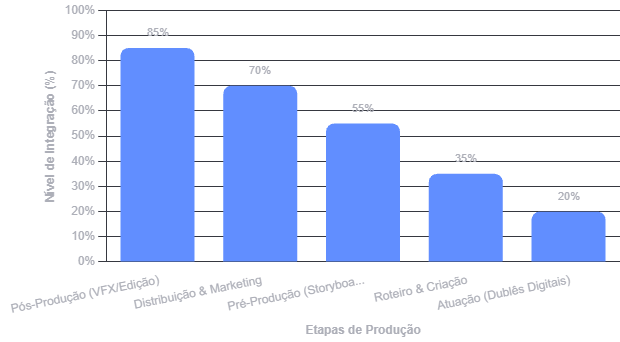

A indústria cinematográfica e audiovisual vive um momento de profunda transformação impulsionado pelo avanço da Inteligência Artificial. Essa tecnologia redefiniu desde a elaboração dos primeiros rascunhos de roteiros até a pós-produção, alterando radicalmente o fluxo de trabalho de criadores e produtoras.
Ao automatizar tarefas técnicas, complexas e repetitivas, a IA permite que os estúdios agilizem entregas e reduzam significativamente os custos de produção. Longe de ser apenas uma promessa para o futuro, a ferramenta já esteve presente na produção de filmes aclamados e premiados pelo Oscar.
No entanto, essa rápida expansão sem regras gerou revoltas históricas em Hollywood, levando roteiristas e atores a paralisarem produções para exigir proteção contra a substituição do trabalho criativo e o uso indevido de suas imagens. O cenário atual expõe um choque direto entre a busca pela eficiência operacional e o impacto da tecnologia na rotina dos artistas do audiovisual.

RELATO

"A inteligência artificial não vai substituir o artista, mas o artista que usa inteligência artificial vai substituir o que não usa."
"Para quem faz produção independente, a IA otimiza etapas que antes levariam meses ou exigiriam um orçamento gigante. Ela não cria a história por você, mas te dá braço para executar."
"O segredo não é deixar a máquina fazer tudo sozinha, mas sim saber direcionar o olhar artístico. Sem uma visão humana por trás, o resultado fica genérico."
Bryn Mooser Cineasta americanoProposta de Solução
A verdadeira virada de chave para a Inteligência Artificial no audiovisual não é substituir o talento humano, mas libertar todo mundo da parte chata do trabalho.
A ideia é simples: criar um fluxo de trabalho híbrido. A IA entra em cena para resolver aquele trabalho braçal, exaustivo e repetitivo — como organizar terabytes de arquivos, fazer decupagem de cenas, sincronizar áudios, gerar rascunhos de storyboards e adiantar renderizações pesadas.
Quando você tira essa carga pesada das costas da equipe, sobra o que realmente importa: tempo e energia para criar. Diretores, roteiristas, editores e artistas conseguem focar no coração do projeto, que é contar boas histórias, ajustar a sensibilidade das cenas, dirigir atores e lapidar a estética visual.
No fim das contas, essa união deixa o processo mais rápido, reduz custos e dá a produtoras menores o poder de entregar projetos com visual de superprodução. É a tecnologia trabalhando para o artista, e não o contrário.